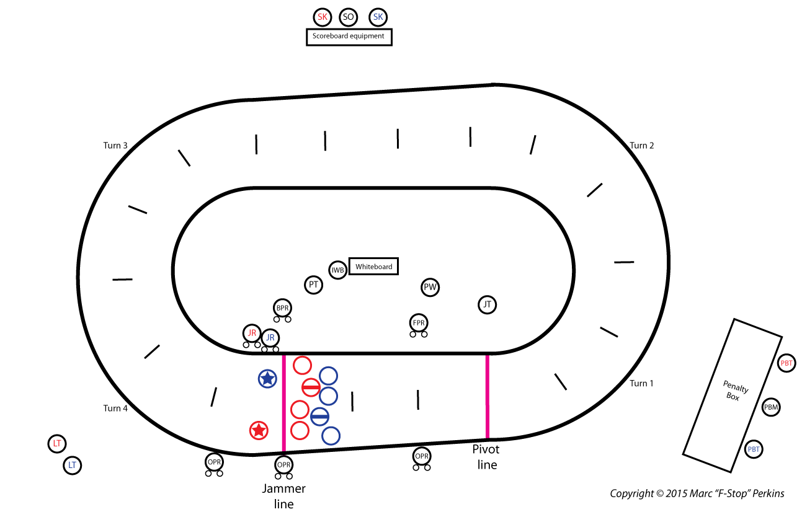

0/0
NSO roles marked learned
Flat Track Roller Derby
Train NSO role knowledge, skater rules, referee hand signals, and referee positions in one app.
NSO roles marked learned
Rule modules marked learned
Best drill score
Common on-skates referee positions are shown below. Exact staffing numbers vary by crew size and event.
Use this orientation map before studying role cards so track zones, lines, and crew placements are easier to visualize.

Source: Marc "F-Stop" Perkins, Inside Pack Ref (2015).
Play through jam timelines. The simulation pauses at decision points and scores your choices.
Run focused drills for NSO responsibilities, skater rules, and ref signals, or take a mixed assessment.
Choose a drill mode above to begin.